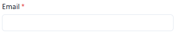
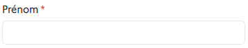
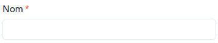
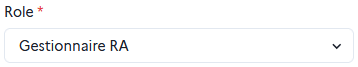
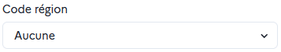
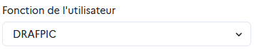
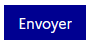

Créer un utilisateur
Pour créer un nouvel utilisateur dans Orion, il faut cliquer sur le bouton Ajouter un utilisateur et remplir le formulaire qui s’affiche (les champs obligatoires sont marqués d’une astérisque) :
- Email⚓
Ce champ permet de renseigner l'
adresse email de l'utilisateur. - Prénom⚓
Ce champ permet de renseigner le
prénom de l'utilisateur. - Nom⚓
Ce champ permet de renseigner le
nom de famille de l'utilisateur. - Rôle⚓
On choisit ici quel
rôleattribuer à l'utilisateur, en fonction des permissions que l'on souhaite lui donner dans l’outil. - Code région⚓
Ce champ apparaît seulement si on sélectionne un rôle en région académique dans le champ
Rôle. Il s'agit dunom de la région. Il peut être définir par défaut. - Fonction de l'utilisateur⚓
On peut choisir la
fonction de l'utilisateurparmi les fonctions administratives listées. - Envoyer⚓
Le bouton
Envoyerpermet de valider la saisie et de créer l'utilisateur.